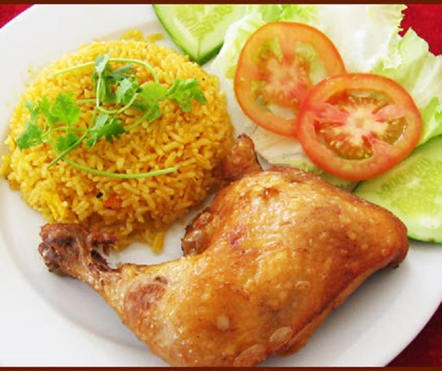

2. Cơm gà xối mỡ
Cơm gà xối mỡ cũng là món ăn ngon được nhiều du khách khi tới đây đều muốn thưởng thức. Bạn sẽ rất bất ngờ bởi nó chẳng giống với bất kỳ món gà nào mà ta từng ăn. Món Cơm gà xối mỡ vẫn có một sự đặc trưng riêng của hương vị, sự mềm và chín đều, không bị sống trong, cũng không quá chín hay bị khô. Lớp da giòn vừa đủ kết hợp với thịt mềm bên trong, ăn thêm với chút cơm và rau xà lách hay dưa chuột và chấm với xì dầu. Chắc chắn du khách tới đây sẽ phải thốt lên rằng “đây là món ăn thực sự ngon” và chẳng kém gì cơm Tấm Sài Gòn.

Lớp da gà ở đây giòn tan, hương vị đậm đà, thịt gà mềm mà không bị bở, thấm đều gia vị. Tuy nhiên bí quyết để có lớp da gà giòn tan và vị mặn vừa ăn thì không phải dễ. Nhiều người hay gọi kèm theo một chén canh rong biển nấu với cật heo, chả cá viên và thịt heo bằm có hương thơm và vị rất quyến rũ. Giá một phần cơm gà xối mỡ từ 45.000 – 60.000 đồng/suất
Có rất nhiều địa chỉ ăn cơm gà xối mỡ ngon nhưng bạn nên thử ghé qua Cơm gà xối mỡ Lão Hương Thân ở 402 Trần Phú, phường 7, quận 5. Một điều đặc biệt là khi tới đây ăn hãy nhớ gọi kèm theo món canh rong biển nhé, như thế bạn sẽ cảm nhận được vị khác biệt của cơm gà xối mỡ khác với nhiều loại cơm gà khác và chắc chắn sẽ không bao giờ quên. Vậy nên, bạn hãy dẫn bạn bè và người thân cùng tới đây ăn nhé.